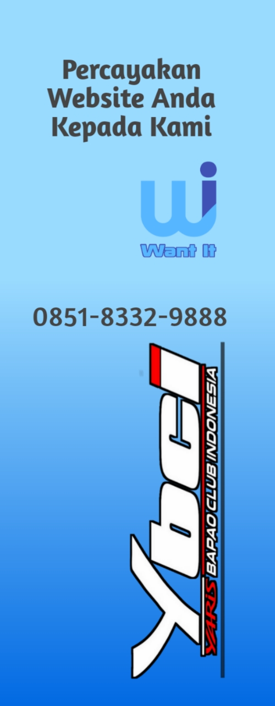
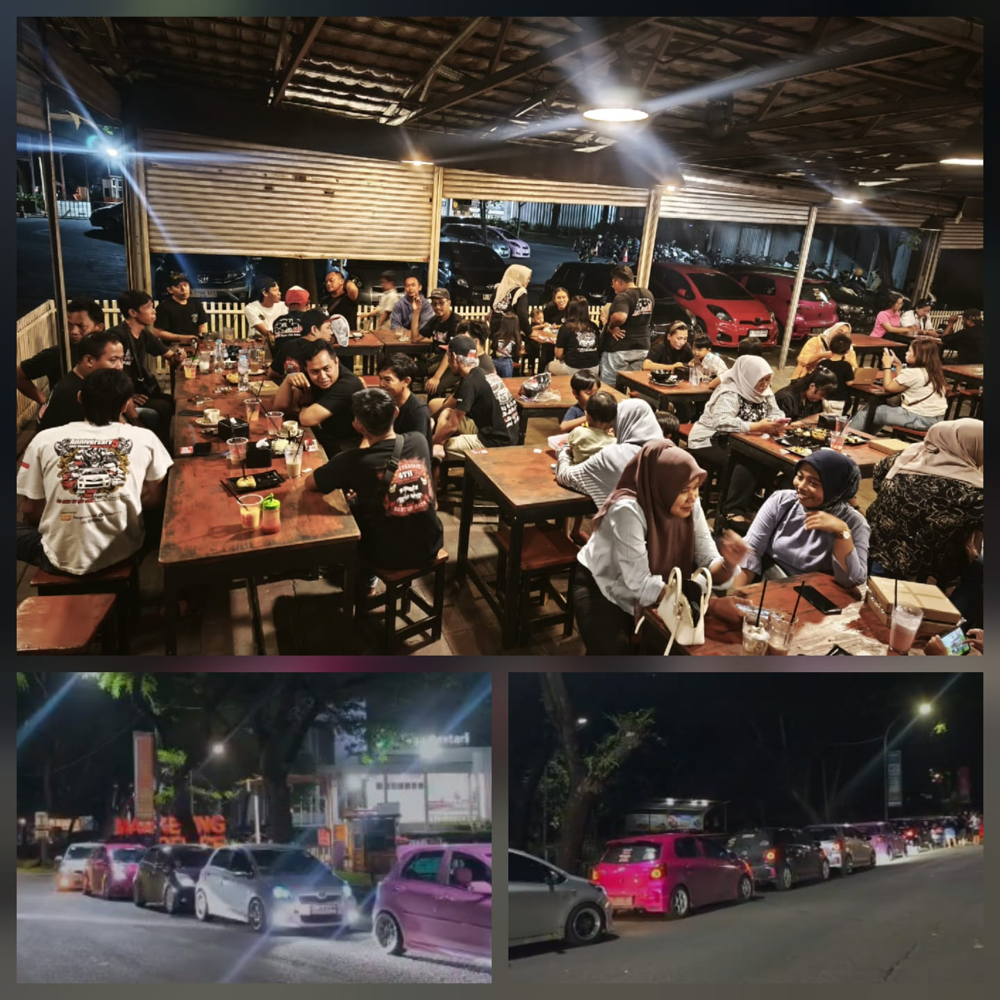

Yaris Bapao Club Indonesia (YBCI) Banten Raya kembali menggelar kegiatan Kopdar (Kopi Darat) bulanan yang bertempat di Roti 88 Talaga Bestari, Kota Tangerang, pada Minggu (14/12/2025). Kegiatan yang dimulai pukul 16.00 WIB hingga selesai ini dihadiri oleh para anggota YBCI Banten Raya dari berbagai wilayah sebagai bagian dari agenda rutin komunitas. Kopdar bulanan tersebut menjadi momentum penting bagi YBCI Banten Raya untuk mempererat tali silaturahmi antaranggota, sekaligus sebagai wadah komunikasi dan koordinasi dalam membahas program kerja komunitas ke depan. Suasana kebersamaan dan kekeluargaan tampak terjalin hangat sepanjang kegiatan, seiring dengan diskusi yang berlangsung secara terbuka dan konstruktif. Dalam kesempatan tersebut, agenda utama yang dibahas adalah rencana pelaksanaan kegiatan touring dan camp yang akan digelar di kawasan wisata alam Curug Goong, Kabupaten Pandeglang, Provinsi Banten. Kegiatan touring dan camp tersebut dijadwalkan berlangsung selama dua hari, yakni pada tanggal 17 hingga 18 Januari 2026. Pembahasan meliputi rute perjalanan, kesiapan peserta, aspek keselamatan berkendara, serta konsep kegiatan selama berada di lokasi camp. Selain itu, kopdar bulanan ini juga menjadi ajang sosialisasi teknis dan pemantapan koordinasi antaranggota agar kegiatan touring dan camp dapat berjalan dengan tertib, aman, dan sesuai dengan nilai-nilai kebersamaan yang selama ini dijunjung tinggi oleh YBCI. Para anggota turut memberikan masukan dan saran demi kesuksesan pelaksanaan agenda tersebut. Tidak hanya berfokus pada pembahasan kegiatan otomotif, kopdar kali ini juga diisi dengan pembagian kaos Ladies Club Banten Raya. Kaos tersebut diberikan kepada para istri anggota YBCI Banten Raya sebagai bentuk apresiasi dan penghargaan atas dukungan keluarga terhadap aktivitas komunitas. Kehadiran Ladies Club diharapkan dapat semakin memperkuat ikatan kekeluargaan serta menciptakan suasana kebersamaan yang harmonis di lingkungan YBCI Banten Raya. Melalui pelaksanaan kopdar bulanan secara konsisten, YBCI Banten Raya berkomitmen untuk terus menjaga solidaritas, meningkatkan komunikasi internal, serta mempersiapkan setiap agenda komunitas dengan matang. Diharapkan, rangkaian kegiatan touring dan camp yang direncanakan pada awal tahun 2026 mendatang dapat berjalan lancar dan memberikan pengalaman positif bagi seluruh anggota YBCI Banten Raya.